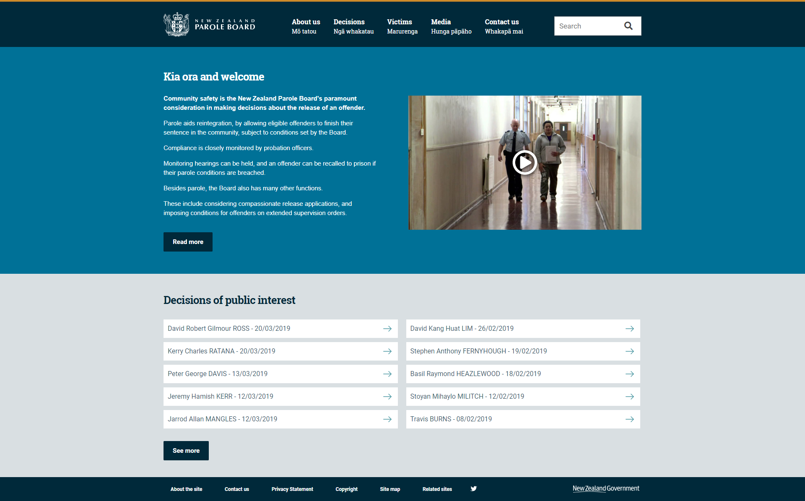

Portfolio
Work produced for Squiz
-
Department of Corrections
Date: March 2019 - May 2019A re-development of the Department of Corrections public web presence to produce a responsive and exciting new look and feel. Implemented using Javascript (ES6), jQuery, slick.js, HTML5, SCSS (+ Flexbox), npm/webpack and built inside the Matrix CMS, including the integration of Funnelback Search.
Link to Website: https://www.corrections.govt.nz/
Display website screenshot -
Central Queensland University (CQU)
Date: January 2019 - February 2019I was outsourced to Squiz NSW to join the team working on the website re-development for Central Queensland University - Australia's largest regional university. My main contributions to this build were portions of the cut-up, server-side Javascript to build content templates and integrating Funnelback Search for the website's Global Search and Events Search. In the screenshot below you can see a number of content templates e.g. Events, News, Highlight Reel and Testimonials. I implemented these and they are fully customisable through the Matrix backend.
A particularly interesting element of this project was its focus on accessibility to the extent of ensuring the sites core functionality still works for users that don't have Javascript enabled. This resulted in an interesting journey into finding alternative implementations of functionality that would normally be achieved with Javascript such as a two tier Mega Menu.
Link to Website: https://www.cqu.edu.au/
Display website screenshot -
Alpine Energy Intranet
Date: November 2018 - December 2018A bespoke intranet for an energy company of 500+ staff. Project aim was to increase communication and cultivate community for the workers across Alpine Energy, Infratech and Netcon. Users have company specific views and can filter news items, events and noticeboard notices by company. They can personalise their profile, favourite pages for ease of access and upload and edit notices to the noticeboard through front-end interfaces, implemented using Vue and Matrix CMS's Javascript API.
The intranet was implemented with Javascript (ES6), jQuery, HTML5, SCSS (+ Flex and Gridbox), npm/webpack and Vue.js and was built inside the Matrix CMS.
Unfortunately, I cannot provide a a URL to the site as the Intranet is private and IP restricted.
Display intranet screenshot
-
NZ Parole Board
Date: October 2018 - November 2018A small website built for a sub-body of the Department of Corrections. The projects purpose was a modern and responsive redesign to improve users experience on the Parole Board website.
Tools used for this implementation were Javascript (ES6), jQuery, HTML5, SCSS (+ Flex and Gridbox) and npm/webpack and the website was built inside the Matrix CMS, including the integration of Funnelback Search.
Link to Website: https://www.paroleboard.govt.nz/
Display website screenshot -
Classified
Date: September 2018 - October 2018One of the first projects I worked on at Squiz was implementing additional functionality on a portal application built in React, React Router and Redux. I can't specify the project details but I was tasked with adding new user functionality requiring work with components, actions and state/redux store as well.
This was my first introduction to javascript frameworks and I was dropped in the deep end. This resulted in a challenging yet rewaring experience as I slowly became more comfortable with React, Router and Redux.
Unfortunately, I cannot provide a a URL to the application as the application is private and IP restricted.
Side projects
-
Personal website
Date: April 2019My personal website has been a work in progress for a while, but I decided to use the recent holiday to finish it up and deploy it. I used Javascript (ES6), jQuery, SCSS (Flexbox and Grid), HTML5 and gulp as a task manager. I originally had a webpack boilerplate but it seemed overkill for this site, which simply needed some automated tasks that I could run from the command line. Unfortunately, I had to convert my ES6 JS back to ES5 as gulp uses uglify-js which doesn't support ES6, but this isn't a JS heavy application so it wasn't a big deal.
I had no deployment or hosting knowledge prior to this project. After some research, Netlify came into the lime light as a stress free service to deploy modern static websites. I followed through the documentation and easily deployed my site with a custom domain and HTTPS (SSL/TLS) certificate for secure browsing.
Link to Github Repo: https://github.com/scottishkiwi/personal-website
-
React/Vue Todo List Applications
Date: September 2018After a solid year of working with JS I decided to get my head around Javascript Frameworks. I selected React and Vue and built identical Todo List Applications in both frameworks. This was with the intention of learning Front-end development with JS Frameworks, but also discovering the differences and similarties between the two of the most popular choices.
This project increased my understanding of the core concepts of Frameworks, finding differences in the way they mutate data, template and style UI components, handle events etc. I also integrated the relevant Routers into both applications.
Link to Github Repos: https://github.com/scottishkiwi/react-todo https://github.com/scottishkiwi/vue-todo
-
Snake
Date: August 2018A quick Javascript implementation of a classic game. The aim of the project was to see how quickly I could code a simple snake game that would work in the browser. It also provided an opportunity for me to explore the new (at the time) HTML5 canvas tag.
Link to Github Repo: https://github.com/scottishkiwi/snake-game
Play Snake -
HTML, CSS and JS Calculator
Date: July 2018A quick and fun implementation to see if I could build a simple calculator out of HTML, CSS and Vanilla JS. Was inspired to try this after discovering that Javascripts eval() function takes a string of numbers and operations, and evaluates them for you. The design is based off the original iPhone Calculator.
Link to Github Repo: https://github.com/scottishkiwi/Calculator
Calculator0AC⇤÷789x456-123+0.=